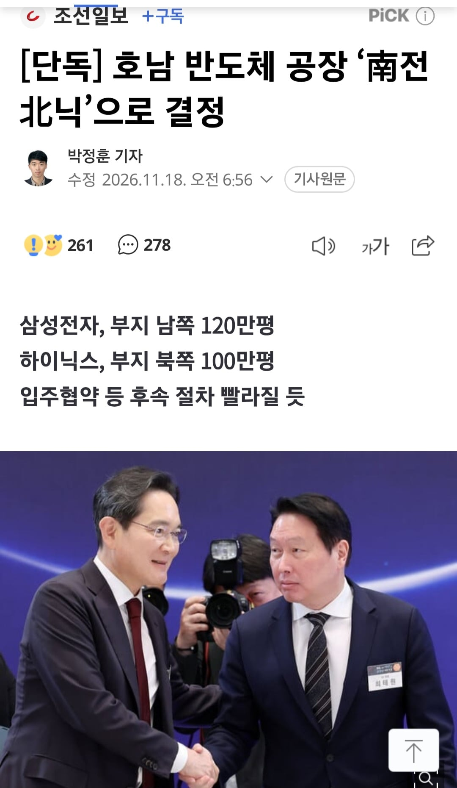
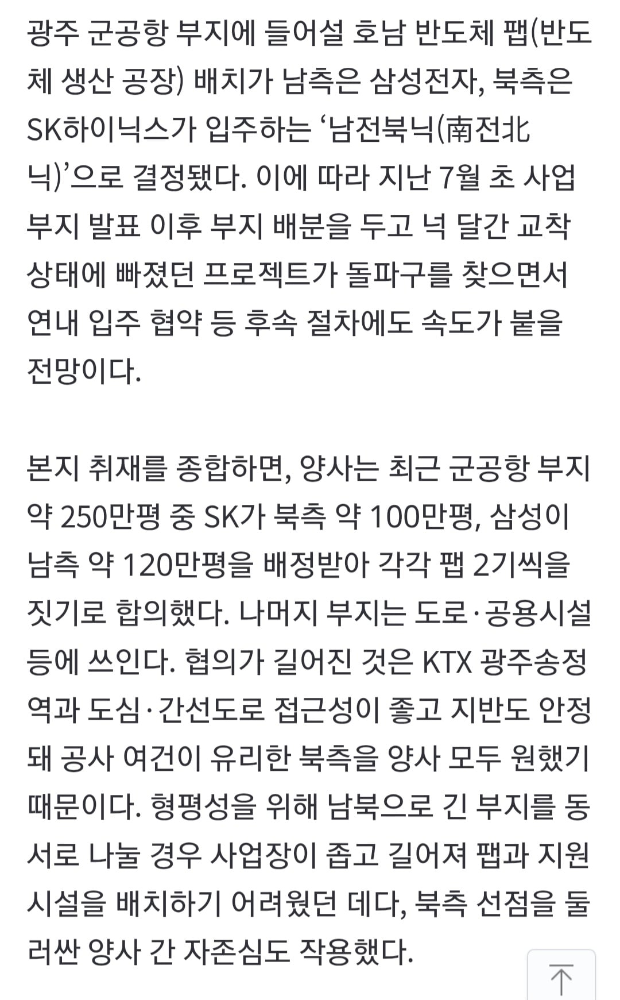

다좋은데 사실상 폭동깡패짓이나 다름없는 파업이나 하지말길
폭동깡패짓 대장은 금속노조 중에서도 울산 지부 쪽인데여?
번지수 잘못 찾으신듯
저거 다 무인화로 지을거라 옛날처럼 뭐 지역 고졸오퍼레이터 고용창출같은거 거의 없다 ㅋㅋㅋㅋ 엔지니어급은 다 파견일테고 운나쁘게 차출당하거나 연봉보고 입사한 서울애들이 내려가서 주말부부함 ㅋㅋㅋ
ㄹㅇ 재수없게 동탄사업장이나 평택에서 끌려내려가는놈들만 불쌍하지 ㅋㅋㅋ
아 더불어 같이 내려가야되는 협력사 엔지니어들도 ㅋㅋㅋㅋㅋㅋㅋ
어차피 패키징만 한다고 하는데 다른거 안내노라고 지랄할까봐 겁나네 ㅋㅋㅋㅋ
협력사야 까라면 까겠지만 청주만해도 4캠짓기전엔 장비사엔지니어가 갑질 존나 했지 ㅋㅋㅋㅋㅋㅋ
내려갈 사람들은 내려가겠지 ㅋㅋ 근데 문제가 요즘 공장 자동화 잘 되어서 생각외로 고용창출은 초기 공장 지을땐 말곤 없을거다
다들 잘 모르는데 광주시 입장에선 저 군공항만 치워도 본전임. 저 군공항때문에 무안이랑 존나게 싸우고 전남이랑 통합하는데도 영향줄정도였음.
무안 그 새기들은 군공 받겠다고 해서 공항 지어주고, 지어지고 나니까 안 받겠다고 드러누운 다음에 국제항 열어주면 받겠다고 해놓고 또 드러누우니 대단함 ㅋㅋㅋ
지역 분산이 간절하기는 한데....... 저게 맞나........
지금이 쌍팔년도도 아니고 삼성이랑 SK가 정부가 하라는데로 하겠음?
두 기업 다 똑똑한 양반들이 계산기 두둘겨 보고 아다리가 맞으니깐 진행하는거지 뭔
등신들은 이해 못함
암 그라제잉 잼버리랑 여수 섬박람회는 무안공항은 아다리 맞아서 한거제잉
그걸 기업이 했냐? 뭘 되도않는걸 가져다 붙이고 앉아있어
대가리 딸리면 아가리라도 여물고 있어라
ㅋㅋㅋ 개통쾌하네 ㅋㅋㅋ
말잘하노 ㅋㅋㅋㅋㅋㅋ
어떤 시민단체들이 빨대꽂을지 벌써 기대되는걸ㅋㅋㅋㅋ
할아버지의 유언을 잊은듯 합니다.
그말 한적없고 선동이라함
며느리부터 전주 사람린데 뭔 개소리를 허위 사실로 지역감정은 해줘야 개드립 36렙 찍는구만
음?
하 씁..취지는 지역 균형발전이겠지만 반도체 사이클 꼬라박을때쯤 완성돼서 "애물단지 된 반도체 클러스터... 책임은 누구에게 있는가" 같은 소리나 나올것 같은 불길힌 예감은 왜 드는거냐
지금까지 그래왔기 때문에, 과거를 보면 타당한 걱정이긴하지.
메모리 사업은 300억 달러를 써서 290억 달러를 버는 사업이라 할 정도이기도 했고.
다만 이전 반도체사이클은 스마트폰이나 데스크탑 교체주기에 맞춰졌다면, 지금 짓는 건 미래에 AI가 더 많은 분야에 쓰일까? 이거 하나에 베팅한거라.
그런데 솔직히 출산율도 그렇고, AI가 진짜가 아니면 어짜피 망하는 거라, 개인적으론 하이리스크 하이리턴이고, 우리는 이런 베팅을 할 수 밖에 없음.
Ai는 혁명임 진짜
이거에 올인하는 게 맞다고 봄
용인도 원래는 지방에 지어야 하는데 남방한계선 이지랄 털어서 산 깎고 별 지랄을 다 해서 공사기간만 몆배로 불어나는거임.
거기 꼬라지봐라. 전기 없어서 결국 송전망 설치 하는데 접경주민들 갈등 뒤진다 진짜.
포항에 지으면 돠겠구만
잘 모르는데 지도상 위치가 좋아보이네
때쓰니까 되기는 되네 ㅋㅋ
저기는 전자파 안나오냐? 반도체 공장인데 ㅋㅋㅋㅋㅋㅋㅋ
사드때 모여서 시위하던놈들 어디감? ㅋㅋㅋㅋ
야 야 웃어
잉.. 하기시른데
이때부터가 메모리주 폭락의 시작이었지..과잉투자,과잉증설..
반도체 폭망 신호탄
대구 경북 쪽 친구들 화가 많이났네 ㅋㅋㅋㅋㅋ
찐은 경기남부, 충북권 애들이지 ㅋㅋㅋㅋㅋ
아 그런건가? ㅋㅋㅋㅋ
TK는 반도체 아니었어도 어차피 전라도 싫어하는 친구들 많음(정치적 이유 등)
애초에 반도체도 정책 가닥 잡혔을 때부터 티케이 쪽에선 딱히 기대하기 힘들었음
그리고 티케이는 전라도를 아래로 보더라도 최소한 라이벌이라 인식함
근데 경기남부 충북권역 입장? 전라도(울산을 제외한 경상, 강원 마찬가지) = 거지들이나 사는 가난뱅이 동네 격오지나 다름없다는 거임 ㅋㅋㅋ 이런 곳에 반도체를 넘겨준다? 걍 눈깔 도는 거
모든 시그널이 어떻게든 진행한다는 걸 가리키고 있었는데 절대 안된다느니 흐지부지 된다느니 어휴
기업이 수십조를 예산잡고 짓는데 물이나 이런거 안재보고 하고 있을까
정권이 무서워서 회사망하라고 수십조를 쏟아붓겠냐고
그냥 호남에다가 짓는게 싫은거 아니냐?
군공항 뷰지 ㄷㄷ
대기업 지방으로 내리라고 커뮤에서 먛이 봤는데.. 커뮤 여론이 안좋네욤
내지역 아니니까 다들 화난거임
물도 없고 전기도 없고 교통도 개좆망이고 나라에서 지으라그래서 억지로 짓는거 다아는 사실인데 삼닉정도 되는데 손해보면서 짓겠냐 그러고 있네
데센이나 지으라고해
저기 애호박찌게 맛있는 집 있는데..
원래 반도체는 번돈의 상당수는 재투자해서 뒤따라오는애들 죽여버리는게 핵심인 사업임